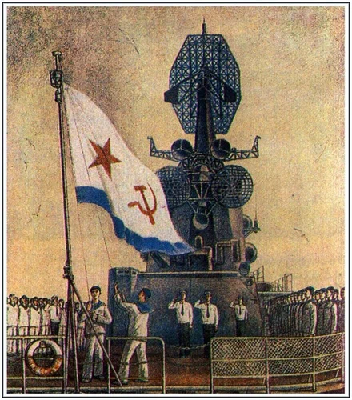

Российский императорский флот каждое утро погружается в благоговейную тишину. Слышно, как журчит стекающая с палуб в шпигаты вода только что законченной или прерванной приборки, - такая тишина стоит над кораблями. Шлюпки на рейдах, увидев сигнал, сушат весла, неподвижно распластывая их над водой, напоминая странных больших птиц; серебряные крупные капли падают с белых, стеклом скобленных лопастей в гладкую утреннюю воду, звук капель слышен - такая тишина стоит над рейдами. Корабли, идущие в море, где их никто не видит, тоже погружаются в безмолвие, и слышно, как рокочут в воде их винты - такая тишина стоит над Балтийским морем.
Столетья не шутят. Они прошли над россий
…Двести лет этот флаг почитается, как знамя в полку, и все служащие на корабле должны охранять его до последней капли крови. На якоре его охраняет особый часовой, а на ходу, во время боя, когда флаг поднимается не только на гафеле, но и на мачтах даже ночью, охранение его поручается надежному унтер-офицеру, который не допускает никого до него дотрагиваться без личного приказания командира. Если флаг будет сбит, он неме
И поэтому за пять минут до восьми часов на адмирал
Подъем флага обыкновенный, и никакой церемонии действительно не готовилось; делалось только то, что делается изо дня в день. Караул выбежал наверх, торопливо вышли на ют офицеры и вытянулись в длинную шеренгу по правому борту, горнисты выстроились рядом с караулом, и все люди на палубе бросили работу и стали вдоль поручней, спиной к борту.
Разговаривать нельзя. Тишина накапливалась над кораблем и рейдом, уже вышел где-то далеко на юте командир, и к
- На фла-аг и гю-юйс!
Команда протяжна, голоса вахтенных начал
… Она очень долга, эта утренняя минута молчания, единственная минута, когда флотские люди могут уйти всем сердцем и всей мыслью в свой внутренний мир. Потом начнется корабельный день, доверху налитый службой; он прогремит по суткам, размеренный и точный, он заполнит сердце и мысли и к вечеру швырнет в койки вконец вымотанные им тела, которым останется только одно - спать.
Юрий знал, что на флоте нет бессмысленных традиций, все оправдано и прекрасно. Двести лет тому назад установлено это минутное молчание перед началом флотского дня, и в нем - глубокий смысл. Когда корабль в дальнем плавании; когда не видать даже чужих берегов; когда день встает из-за океана неизвестным, враждебным и коварным; когда океан так велик, что родные села, именья и города со всем, что в них осталось самого дорогого, заслонены выпуклостью земного шара, - тогда эта минута отдается полно и благоговейно самому себе, богу и семьям. Безмолвная тишина раскрывает простые морские сердца, люди вспоминают своих близких, люди без слов и молитв (даже слегка стыдясь) обращаются к всевышнему, - ибо беды, которые таит в себе море, неисчерпаемы... Кто в море не бывал, тот б
Корабль молчал сосредоточенно и серьезно. Молчал вахтенный на склянках, вцепившись рукой в хитро оплетенный конец, ввязанный в язык колокола, - в восемь часов нужно пробить четыре двойных удара. Часы над его головой - круглые морские часы с козырьком от дождя и с лампочкой для ночи - показывают уже полминуты девятого. Это ничего не значит - склянки бьют ровно в восемь часов, а адмирал лучше знает, который час; молчит вахтенный, смотря не на часы - точные корабельные часы, - а на рот вахтенного начальника. Вахтенный начальник тоже молчал, не доверяя сигнальщикам и всматриваясь в адмиральский сигнал; надо уловить тот миг, когда он отделится от нока реи и пойдет вниз, - для того и поднимают сигнал, чтобы все корабли на рейде действовали одновременно. Молчал караул на юте, молчали дневальны
… - Флаг подымают!
Торопливый крик сигнальщика резко нарушил минуту молчания, полно и благоговейно отдаваемую мыслям о самом дорогом, что есть у флотских людей. Люди, очищенные и просветленные этой минутой сосредоточения и примиренные ею друг с другом, вступали в новый флотский день с новой верой в милость всевышнего и с новой бодростью... Так, по крайней мере, думали голландские шкипера, насаждавшие в российском флоте правильные морские традиции, а голландским шкиперам была свойственна некоторая сентиментальность.
Безмолвный и быстрый, испрашивающий разр
- Флаг и гюйс поднять!
Одновременно, враз, лопнула тишина.
Колокольный звон склянок. Резкие фанфары горнов, подобранных нарочно чуть не в тон. Стук весел, взлетающих над шлюпками вертикально вверх. Свист всех дудок унтер-офицеров. Трепетание ленточек фуражек, сорванных одновременно с тысяч голов. Двойной сухой треск винтовок, взятых на караул: ать, два. Флаг медленно ползет к клотику, играя складками. Горны играют дальше всех, дудки стараются не отстать, и щеки унтер-офицеров багровеют. Потом установленная мелодия горнов и воздух в унтер-офицерск
Она уже иная. Эта тишина полна скрытого напора нового флотского дня. Он не ждет, он торопит, и командир первый надел фуражку. Лейтенант Греве начал флотский день:
- Накройсь! Караул вниз! Вольно! Продолжать приборку!
Горны вскрикнули коротко и высоко, и зачарованный молчанием и неподвижностью флот сразу ожил. Фуражки взлетели на головы, караулы взяли "к ноги", повернулись, приподняли винтовки и бегом исчезли в люках. Струи воды взлетели из шлангов и зашипели по палубе вместе с трущими ее щетками. Шеренги офицеров сбились в кучки. Шлюпки опустили весла в уключины и сразу же взмахнули ими в долгом гребке, нагоняя потерянный ход, борта линкора мгновенно опустели, люди расползлись по палубе десятками белых раскоряченных лягушек, отдирая песком белые доски…